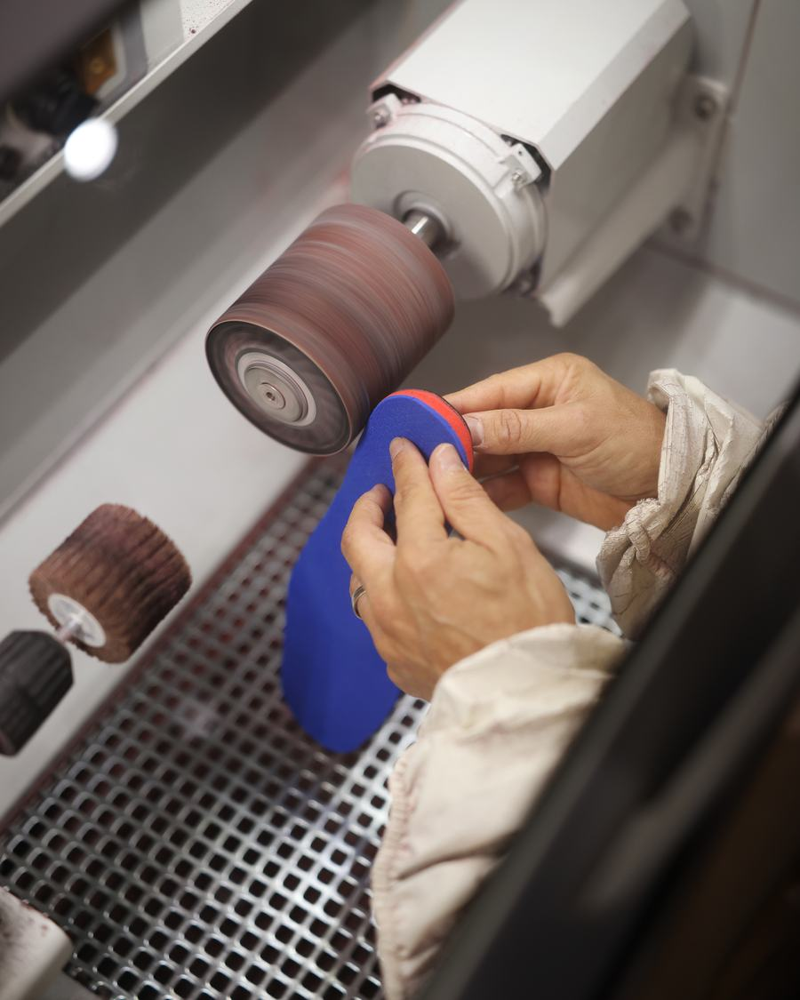
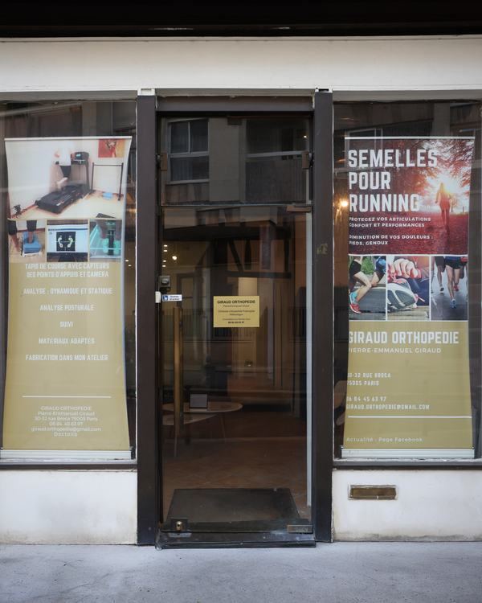

Semelles orthopédiques sur mesure à Paris 5ᵉ
Un bilan complet, une analyse de vos appuis à l’arrêt et en mouvement, puis des semelles fabriquées à la main dans l’atelier du cabinet, rue Broca. Pour soulager une douleur, corriger un appui ou bouger plus sereinement.

- Fabriquées sur placeÀ la main, dans l’atelier attenant au cabinet.
- 230 € bilan inclusAdulte. 170 € pour un enfant.
- Garanties 6 moisRetouchées ou refaites jusqu’à ce que vous soyez à l’aise.
- Délais courtsUne course approche ? Dites-le, le délai s’adapte.
L’appareillage sur mesure, c’est son métier
Pierre-Emmanuel Giraud est orthopédiste-orthésiste-podologiste : son métier est de concevoir et de fabriquer des appareillages sur mesure — semelles orthopédiques (orthèses plantaires) et orthèses.
Le cabinet se consacre au bilan podologique, à l’analyse de la posture et de la foulée, et à la fabrication des semelles, de la prise de mesures jusqu’aux finitions. Il ne propose pas de soins de pédicurie (ongles, cors, durillons).
Orthopédiste-podologiste ou pédicure-podologue : quelles différences ?

Comprendre vos appuis avant de fabriquer quoi que ce soit
Le bilan commence par un entretien : vos douleurs, vos antécédents, votre activité, vos chaussures. Viennent ensuite l’analyse statique sur plateforme de pression, qui cartographie la répartition des appuis, puis l’analyse dynamique de la marche et de la course sur le tapis du cabinet.
Les résultats vous sont expliqués et remis sous forme de compte rendu. C’est sur cette base — et pas sur un modèle standard — que vos semelles sont conçues. Comptez environ 45 minutes.
Des semelles fabriquées à la main, sur place
Pas de sous-traitance : chaque paire est façonnée dans l’atelier attenant au cabinet. C’est ce qui permet d’ajuster au millimètre — et de retoucher rapidement si besoin.
-

MesurerLes épaisseurs et les éléments correctifs sont choisis et contrôlés au pied à coulisse. -

Tracer & assemblerLe contour est tracé d’après votre pied et votre chaussure, puis les éléments sont assemblés. -

Poncer & ajusterLa semelle est poncée et affinée pour épouser la chaussure, sans point de pression.
L’essayage
Vous repartez avec vos semelles une fois qu’elles sont essayées dans vos chaussures. Les dernières retouches se font sur place.
Le suivi & la garantie
Les semelles sont garanties six mois : si quelque chose ne va pas, elles sont retouchées ou refaites. Un contrôle régulier permet ensuite de les faire évoluer avec vous.
Une semelle adaptée à votre quotidien et à votre sport
Les matériaux, l’épaisseur et l’amorti changent selon la chaussure et l’activité. Et les couleurs se choisissent : c’est votre paire.
Semelles de ville
Pour les chaussures de tous les jours ou de travail : discrètes, elles soulagent les douleurs d’appui sur la durée.
Semelles de running
Fines et légères, pensées pour votre foulée, vos chaussures et vos distances, de la reprise au marathon.
La podologie du coureur Tennis, padel, basket, handball…Sports de raquette & sports collectifs
Appuis latéraux, freinages, sauts : la semelle stabilise le pied dans la chaussure de court ou de salle, sans l’alourdir.
Ces sports en détail Vélo & triathlonSemelles pour chaussures de vélo
Une chaussure rigide, des appuis fixés sur la pédale : la semelle stabilise le pied et répartit la pression sur l’avant-pied.
Le triathlon SkiSemelles pour chaussures de ski
La base d’un bon bootfitting : plus de confort, de stabilité et de précision dans le pilotage.
Le skiVotre sport n’est pas cité ?
Football, volley, badminton, squash, randonnée, danse… La semelle est conçue pour votre chaussure et les contraintes de votre pratique. Parlez-en lors du bilan.
Combien coûtent des semelles orthopédiques ?
| Bilan podologique (adulte ou enfant) | 80 € |
|---|---|
| Bilan + semelles orthopédiques sur mesure, adulte | 230 € |
| Bilan + semelles orthopédiques sur mesure, enfant | 170 € |
Règlement par carte bancaire ou en espèces. La carte Vitale n’est pas acceptée au cabinet.
Un cabinet à la frontière du 5ᵉ et du 13ᵉ
Le cabinet se trouve au 30-32 rue Broca, dans le bas de la rue, à deux pas du boulevard de Port-Royal : à 5 minutes à pied du métro Censier-Daubenton (ligne 7), à une dizaine de minutes des Gobelins et du RER B Port-Royal.
Les patients viennent du quartier Mouffetard et du Quartier latin, des Gobelins, de Croulebarbe et de la Butte-aux-Cailles, mais aussi des 6ᵉ et 14ᵉ arrondissements — et les sportifs de toute l’Île-de-France.

Semelles orthopédiques : vos questions
Combien coûtent des semelles orthopédiques sur mesure à Paris 5ᵉ ?
Au cabinet : 230 € pour un adulte et 170 € pour un enfant, bilan podologique inclus. Le bilan seul coûte 80 €.
Combien de temps faut-il pour fabriquer les semelles ?
Les semelles sont fabriquées sur place, ce qui permet des délais courts. Si une course ou un départ approche, signalez-le à la prise de rendez-vous : le délai est adapté autant que possible.
Peut-on mettre les mêmes semelles dans toutes ses chaussures ?
Une semelle est conçue pour un type de chaussure. Une paire passe souvent d’une chaussure à une autre de forme proche ; pour des usages très différents (ville, running, vélo, ski), une paire dédiée est plus efficace. Le point est fait lors du bilan.
Réalisez-vous des semelles orthopédiques pour les enfants ?
Oui. Le bilan et les semelles sont adaptés à la croissance de l’enfant. Tarif : 170 €, bilan inclus.
Que se passe-t-il si les semelles ne me conviennent pas ?
Les semelles sont garanties six mois : pendant cette période, elles sont retouchées ou refaites jusqu’à ce que vous soyez à l’aise.
Faut-il une ordonnance ?
Non pour consulter et être appareillé. Une prescription médicale est en revanche nécessaire pour demander un remboursement partiel par l’Assurance Maladie et votre mutuelle.
Faire le bilan de vos appuis
30-32 rue Broca, 75005 Paris — métro Censier-Daubenton. Créneaux en ligne sur Doctolib, ou par téléphone.